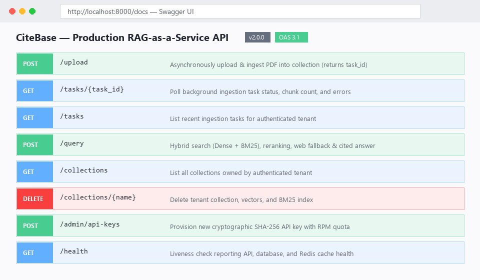
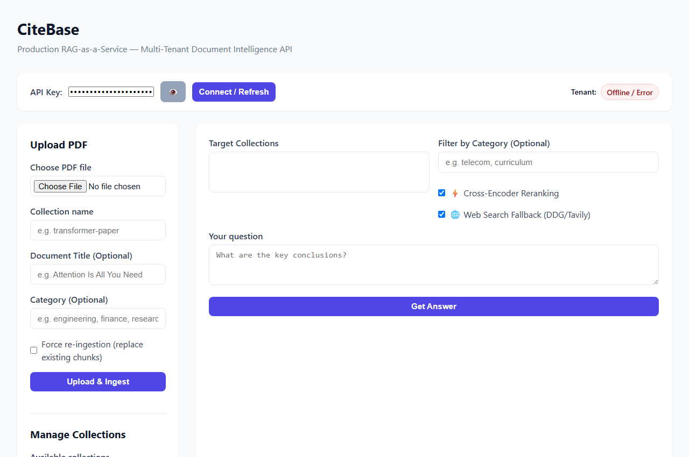

A production-grade, multi-tenant document intelligence engine. Delivers factual, document-grounded answers with exact page-level citations, hybrid search (dense + sparse RRF), cross-encoder reranking, and sub-20ms Redis caching.
Cryptographically verified SHA-256 API keys with strict partition isolation across relational records and ChromaDB vector namespaces (t_{tenant_id}_{collection}).
Fuses 384-dimensional dense semantic vectors (all-MiniLM-L6-v2) with BM25Okapi sparse keyword retrieval using Reciprocal Rank Fusion (k=60).
Re-scores candidate passages using ms-marco-MiniLM-L-6-v2 for precision citation attribution, elevating Hit Rate @ 1 from 80% to 100%.
Deterministic SHA-256 query caching with tenant-scoped TTLs, delivering 18.8ms median response times and up to 349.2x speedup on web queries.
Non-blocking PDF extraction, header hierarchy detection, and indexing via background tasks returning immediate HTTP 202 Accepted status.
Automatic live search fallback (DuckDuckGo/Tavily) with joint cross-encoder reranking when internal document confidence falls below threshold.
GET /docs (Self-Hosted)

docker compose up -d). Once running on your local machine or server, the live interactive Swagger UI is served at http://localhost:8000/docs.
frontend/index.html

Evaluated on a held-out benchmark suite across 205 pages of technical documentation (see EVALUATION_REPORT.md):
| Metric | Hybrid RRF Only | Two-Stage Cross-Encoder | Improvement |
|---|---|---|---|
| Hit Rate @ 1 | 80.0% | 100.0% | +20.0% |
| Hit Rate @ 3 | 80.0% | 100.0% | +20.0% |
| MRR (Mean Reciprocal Rank) | 0.8000 | 1.0000 | +0.2000 |
| Out-of-Domain Fallback | 0.0% | 100.0% | +100.0% |
| Median Cache Hit Latency | — | 18.84 ms | 20.9x – 349.2x |